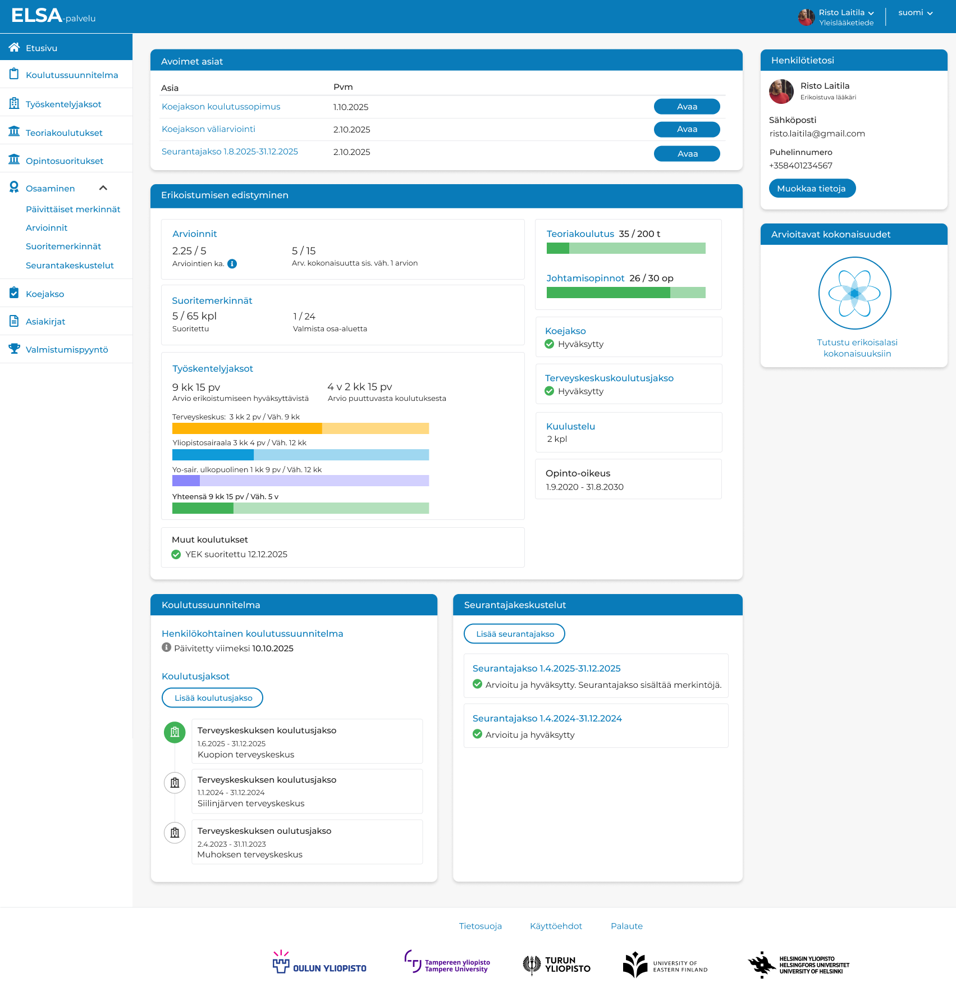
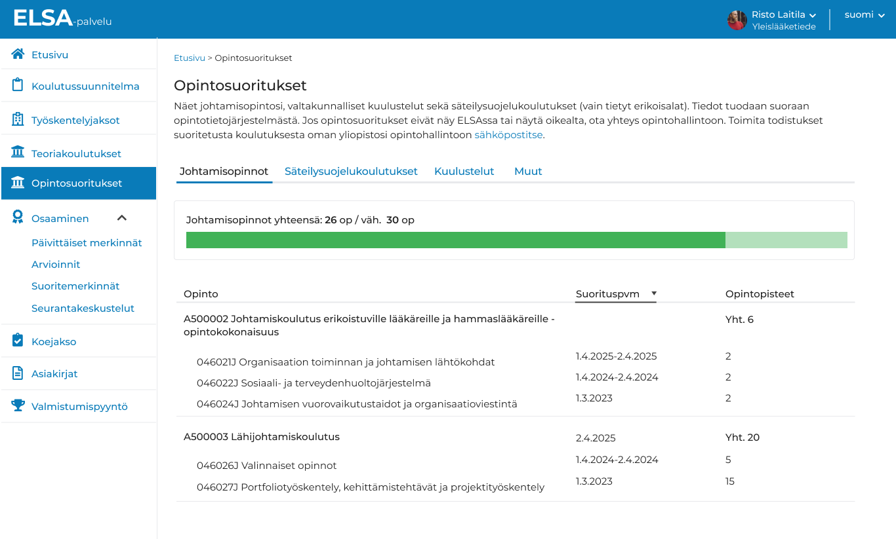
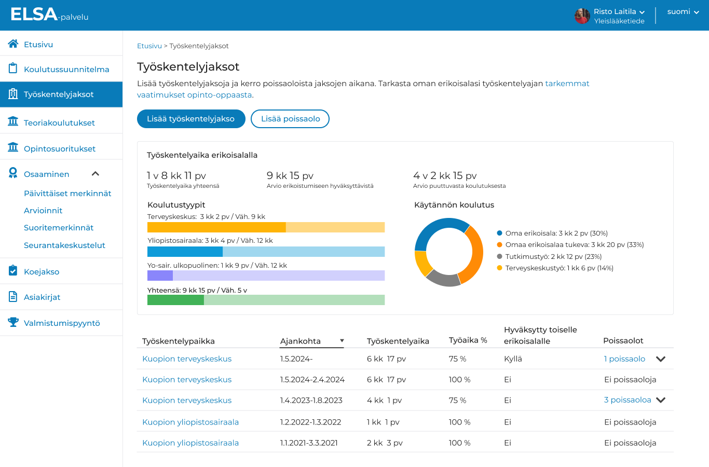
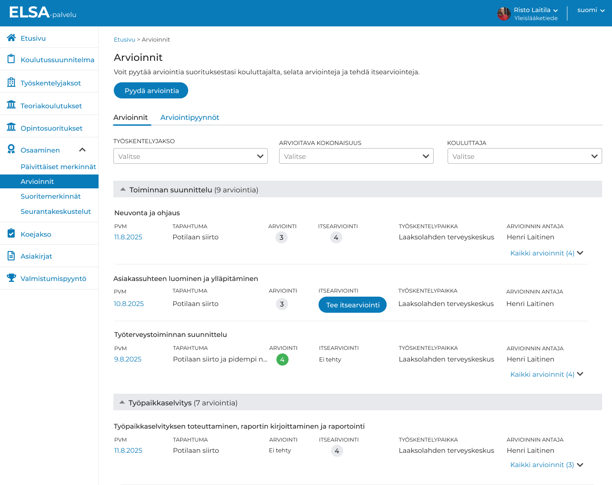
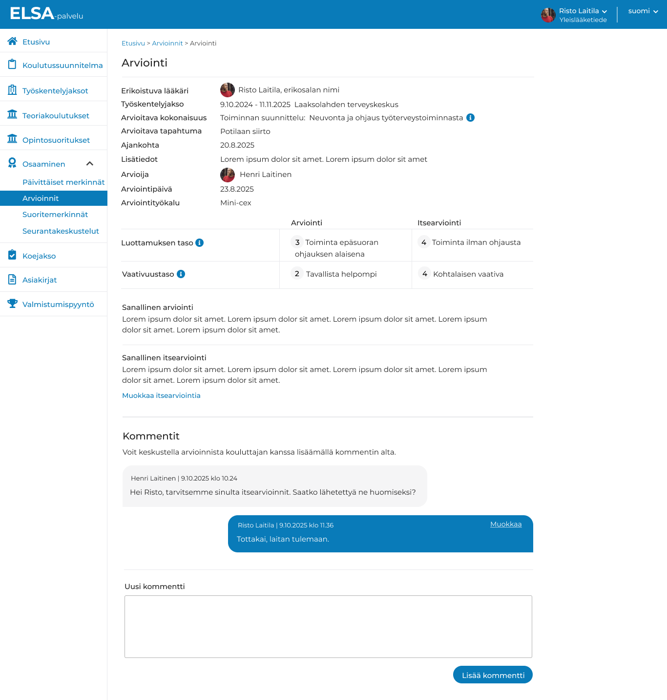
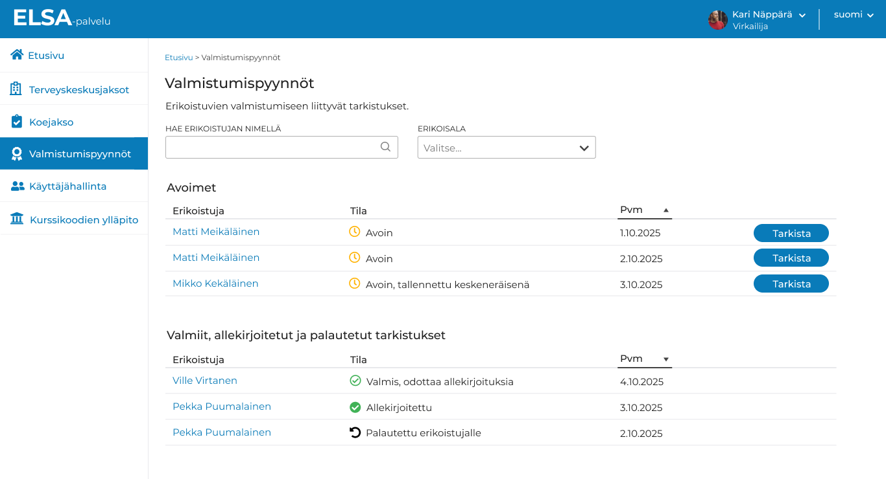
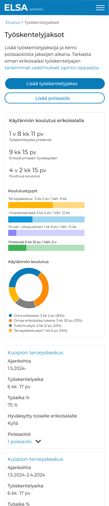

Erikoislääkäreiden koulutuksen edistymisen palveluportaali
ELSA-palvelu
Palvelu ohjaa vuosittain tuhansia lääkäreitä 50 eri erikoisalalla sekä satoja hammaslääkäreitä läpi heidän erikoistumiskoulutuksensa.
ELSA uudistaa erikoistumiskoulutusta lisäten erikoistujan itseohjautuvuutta ja kattaa kaikki erikoistumiseen tarvittavat asiat:
- Erikoistumisen seuranta ja vaatimukset visualisoituna.
- Koulutuksen suunnittelu ja arvioinnit.
- Suoritemerkinnät ja opit päivittäisistä asiakastapaamisista.
- Seurantakeskustelut, koejaksot, valmistumispyyntö jne.
- Lisäksi 600 kouluttajalääkäriä, kymmenet yliopistojen vastuuhenkilöt ja yliopistojen virkailijat hoitavat palvelussa monia erikoistumiseen liittyviä asioita, ja eri roolien toiminnot on kytketty toisiinsa tarkoilla palvelupolkujen suunnittelulla.
- Myös pääkäyttäjälle on suunniteltu paljon toimintoja, kuten arviointityökalujen ja erikoisalojen hallinta.
Haaste
Erikoistumisen haasteet Elsaa edeltävältä ajalta liittyivät viiden yliopiston hyvin erilaisiin käytäntöihin erikoislääkärikoulutuksessa.
- Erikoistumiseen liittyvät prosessit ja vaiheet olivat hajanainen kasa excel- ja word-tiedostoja sekä paperilappuja.
- Käytännössä asiat tehtiin eri yliopistoissa eri tavoilla, kuten itse nähtiin parhaaksi ja mihin resurssit riittivät.
- Kokonaisuuden hallinta ja seuraaminen tuotti paljon ylimääräistä vaivaa.
Ratkaisu ja lähestymistapani
Ratkaisuna toimi eri sidos- ja kohderyhmien osallistaminen sekä laadukas suunnittelu.
- Eri käyttäjäryhmien tarpeet, haasteet ja palvelupolut tunnistettiin haastatteluilla.
- Konseptissa haettiin yhtenäiset parhaat toimintatavat yliopistoille. Palvelulle luotiin tarkempi visio.
- Käyttöliittymäsuunnittelu, visuaalinen suunnittelu sekä sisältösuunnittelua eri roolien lukuisille toiminnoille.
- Laajat käytettävyystestit ja haastattelut, joilla konseptin toimivuus sekä sovelluksen käytettävyys varmistettiin ennen toteutusta.
- Jatkuva palautteen keruun osana ketterää kehitystyötä. Palautteiden perusteella palvelu kehittyi edelleen.
- Pilotointivaiheessa järjestettiin laajempi kyselytutkimus, jolla saatiin viimeiset säröt viilattua ennen täyttä käyttöönottoa.
Lopputulos

Toimiva konsepti
Yhdistää 5 yliopiston erilaiset käytännöt
Mahdollistaa 4 eri roolin saumattoman yhteistyön ja uudistaa erikoistumiskoulutusta itseohjautuvaan suuntaan.
Tukee tulevia erikoislääkäreitä ja hammaslääkäreitä matkalla kohti valmistumista.

Helppokäyttöisyys ja visuaalisuus
Selkeä, helppokäyttöinen ja looginen.
Erikoislääkärikoulutuksen vaiheet ja edistyminen on visualisoitu mm. graafeiksi ja luvuiksi.
Kulkee mukana lääkäreiden arjessa toimien sujuvasti myös mobiilissa.
Työnäytteitä
Erikoistujan päänäkymä

Opintosuoritukset

Työskentelyjaksot

Arvioinnit osaamisesta

Arviointi

Virkailijan valmistumispyyntöjen käsittely

Mobiilitaiton esimerkki

← Portfolioon